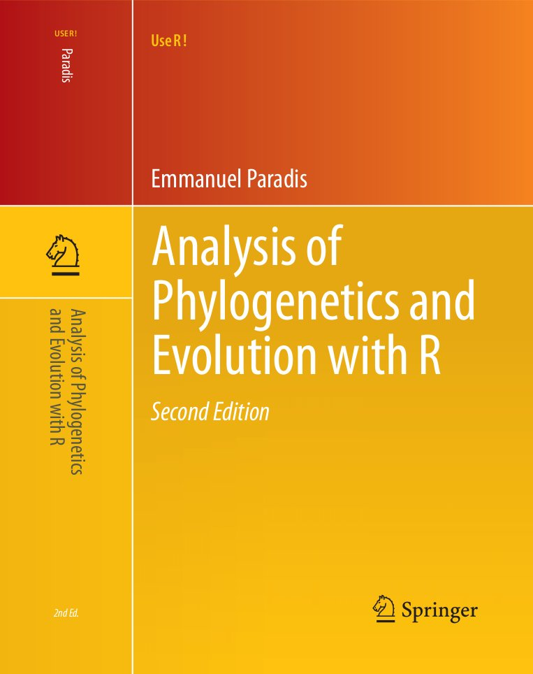
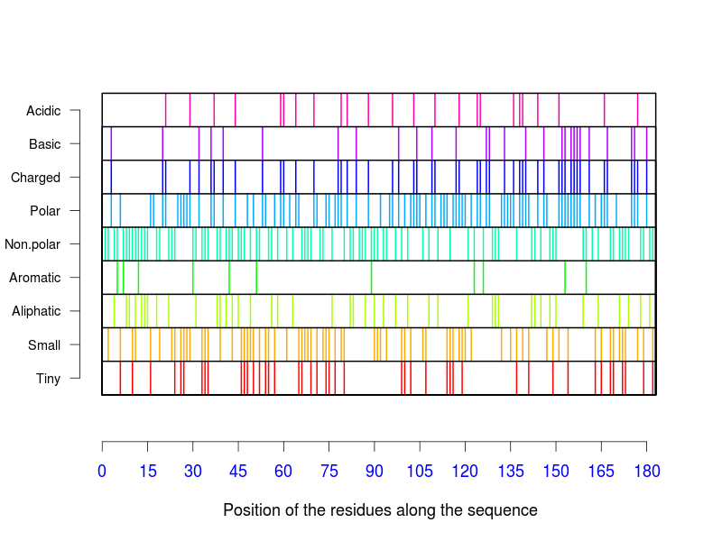
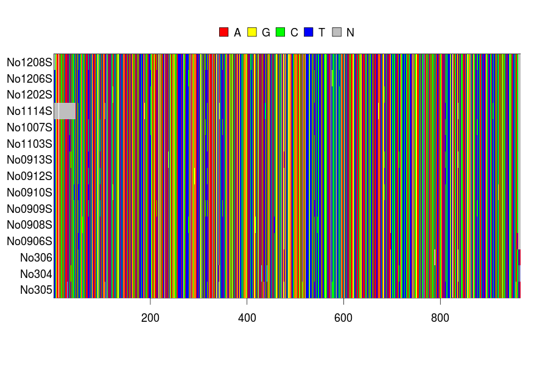
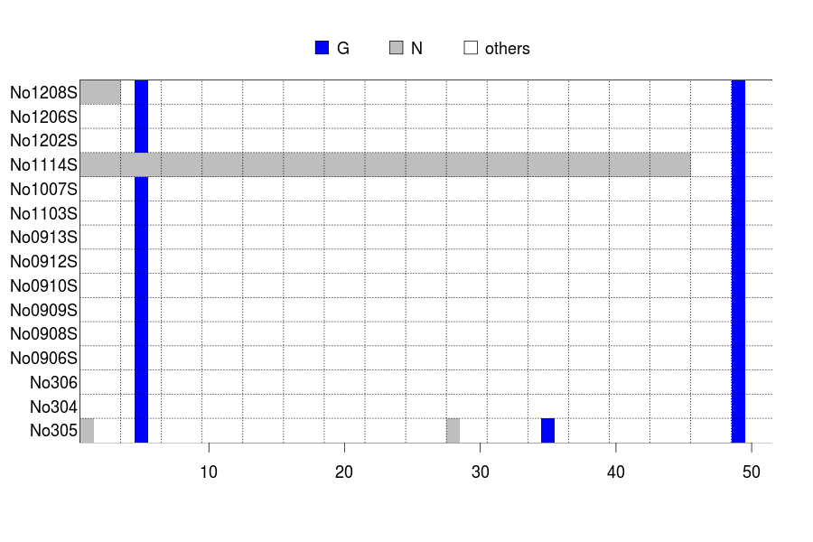
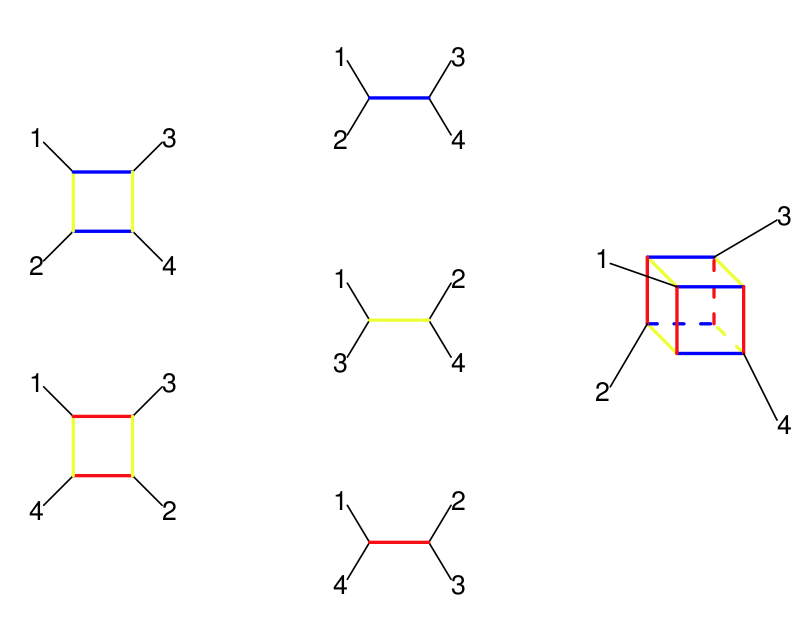
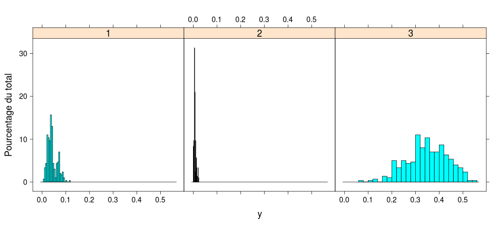
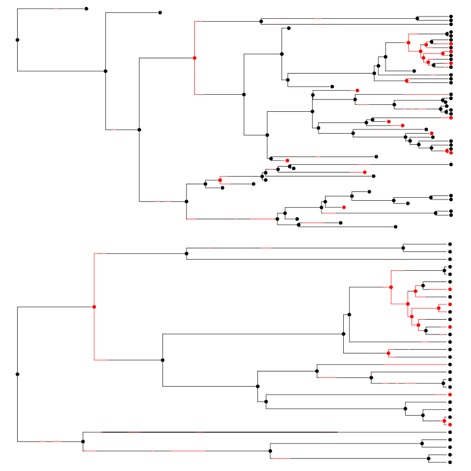

The page on Springer's Web site is HERE.
|  |
An animated version of Fig. 3.2. The original PDB file: bdna.pdb. |
|  | This a colour version of Fig. 3.7. Actually, AAstat does not allow the user to modify the colours, and I modified it to make the BW version in the book. |
|  | An example of the use of image with DNA sequences showing the default colours (which can be modified, see below). |
|  | A variation around Fig. 3.8: the differences are the colour (blue instead of black) and the grid which, instead of marking each column as in the book, shows blocks of three columns (thus, 51 columns are displayed instead of 50 in the book). The code is: image(woodmouse[, 1:51], c("g", "n"), c("blue", "grey")) grid(51/3, 15, col = "black") |
| An animated version of Fig. 4.29. |
|  | Another version of Fig. 5.11 showing the idea behind consensus networks. The shades of grey have been replaced by colours. |
|  | Figure 5.16 with the colours used by default by lattice. |
|  | Figure 7.4 with the colours used by default by diversitree—looking nicer than the shades of grey. |
The page of this book on Springer's Web site is HERE.
You can find here: